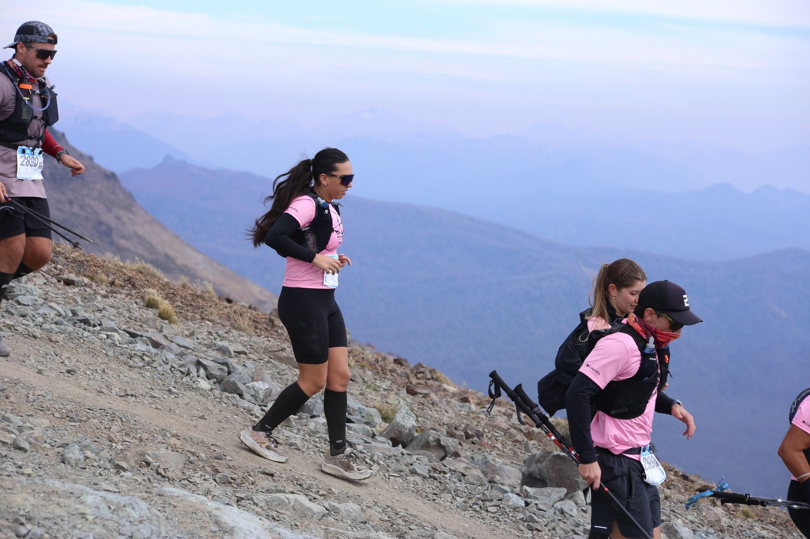

Patagonia Run
Mi Llegada
Nicole Itkin
Mi primer carrera

Mi Recorrido
Empecé a correr hace casi un año, más por inercia familiar que por ganas propias.
Al principio lo sentía como una obligación, algo que tenía que tachar de la lista.
Pero con el tiempo, entre risas y kilómetros sumados, encontré un grupo de amigas que me motivó a seguir.
Sin darme cuenta, correr se volvió parte de mi rutina, siempre en la calle,hasta que algo cambió.
Un Salto a lo Desconocido
Hace poco me animé a salir de mi zona de confort y corrí mi primera carrera de trail:
21 km en San Martín de los Andes, en la Patagonia Run. Tenía miedo, no solo por la distancia, sino por el terreno desconocido.
Me sentía entrenada pero no del todo lista. Sin embargo, lo hice. Crucé la meta agotada pero feliz, y entendí que los desafíos que más asustan
suelen ser los que más transforman.